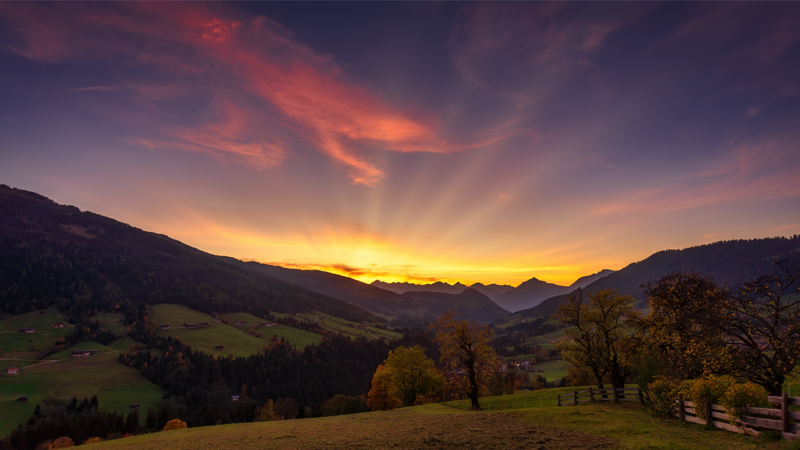
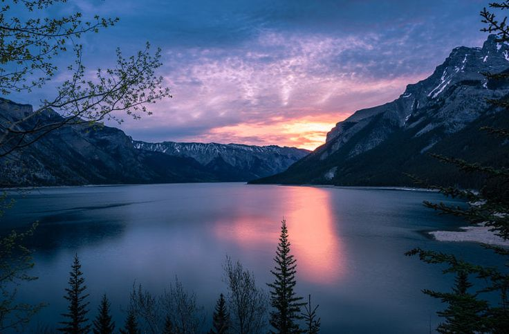

Моменти, які надихають на нові подорожі
Незабутній момент, коли небо розфарбувалося всіма відтінками зеленого та фіолетового над норвезькими фіордами. Фото: Марія Коваленко
Це була найкраща подорож у моєму житті! Кожен момент був продуманий до дрібниць, а краєвиди просто захоплювали дух. Обов'язково повернуся знову!
Професійна команда, чудова організація і незабутні враження. Побачити північне сяйво було моєю давньою мрією, і вона здійснилася!
Дякую за незабутні емоції! Гірські озера виявилися ще красивішими, ніж на фото. Все було організовано ідеально.